correlation_matrix <-cor(library_museum_updated[, c(3:21)], use ="complete.obs")melted_corr_matrix <-melt(correlation_matrix)ggplot(melted_corr_matrix, aes(Var1, Var2, fill = value)) +geom_tile() +labs(x =" ", y =" ") +scale_fill_gradient2(low ="blue", high ="red", mid ="white", midpoint =0) +theme_minimal() +theme(axis.text.x =element_text(angle =90, hjust =1))
In the areas where the squares are dark red, there is a positive correlation between the variables. In cities with a high population, the number of museums, libraries, theater and cinema audience numbers, and the number of suicides are also high. Conversely, when the number of pieces in a museum is high, it is observed that the number of museums, libraries, audience numbers of theaters and cinemas are also high. The variables intersecting in dark blue-purple squares, on the other hand, have a negative correlation. That is, there is an inverse relationship between the proportion of the young population and the literacy rate.
2) Relationship Between Attributes
2.1) Literacy Rate vs. Proportion of Youth Population
Show the code
cor_pop_book_2 <-cor(data$literacy_rate, data$prop_youth_population)cat("Correlation between Literacy Rate and Proportion of Youth Population:",cor_pop_book_2,"\n")
Correlation between Literacy Rate and Proportion of Youth Population: -0.6908264
The correlation of - 0.69 indicates a negative relationship between literacy rate and proportion of youth population. This situation may be due to the number of children in the preschool age group.
Show the code
data|>filter(year==2022)|>ggplot(aes(x = literacy_rate, y = prop_youth_population, color = region)) +geom_point() +geom_smooth(method ="lm", se =FALSE, color ="yellow", formula = y ~ x)+labs(x ="Literacy Rate", y ="Proportion of Youth Population") +ggtitle("Scatter Plot of Literacy Rate vs Proportion of Youth Population in 2022") +theme_minimal() +theme(plot.title =element_text(size =12, hjust =0.5))
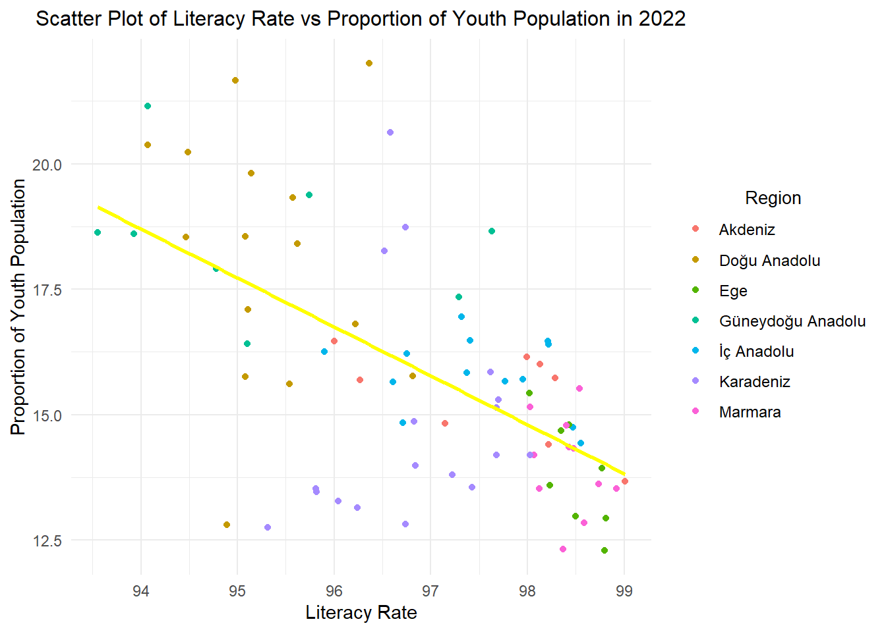
This plot shows an inverse relationship between two attributes. Cities in the Marmara region have a high literacy rate and a low youth population, while the situation is the opposite for cities in the Doğu Anadolu region. This may reflect the impact of socio-economic differences between the Marmara and Doğu Anadolu regions, as well as the effect of children entering the workforce at an early age.
2.2) Population vs. Number of Books
Show the code
cor_pop_book <-cor(data$population, data$book_num)cat("Correlation between Population and Number of Books:",cor_pop_book,"\n")
Correlation between Population and Number of Books: 0.8517451
The correlation of 0.8455922 indicates a strong positive relationship between population and the number of books. In other words, as the population of cities generally increases, there is a tendency for the number of books in libraries to increase as well. Let’s try to support this with visualizations.
Show the code
data|>filter(year==2022) |>ggplot( aes(x = population, y = book_num,color = region)) +geom_point() +geom_smooth(method ="lm", se =FALSE, color ="yellow", formula = y ~ x)+labs(x ="Population", y ="Book Count") +ggtitle("Scatter Plot of Population vs Book Count") +theme_minimal() +theme(plot.title =element_text(size =12, hjust =0.5),axis.text.x =element_text(angle =45, hjust =1, size =6)) +scale_x_continuous(labels = scales::comma, breaks =seq(0, 15000000, by =1000000))
According to the 2022 data from the Turkish Statistical Institute, 97.6% of the cities in Turkey have a population of less than 5 million. As seen in the above graph, the areas where the points are dense correspond to locations with a population of less than 5 million. For this reason, the following plot was created.
Show the code
data %>%filter(population <=5000000& year==2022) %>%ggplot(aes(x = population, y = book_num,color = region)) +geom_point() +geom_smooth(method ="lm", se =FALSE, color ="yellow", formula = y ~ x) +labs(x ="Population", y ="Book Count") +ggtitle("Scatter Plot of Population vs Book Count (Max 5 Million Population)") +theme_minimal() +theme(plot.title =element_text(size =12, hjust =0.5), axis.text.x =element_text(angle =45, hjust =1, size =6)) +scale_x_continuous(labels = scales::comma, breaks =seq(0, 5000000, by =1000000))+scale_y_continuous(labels = scales::comma)
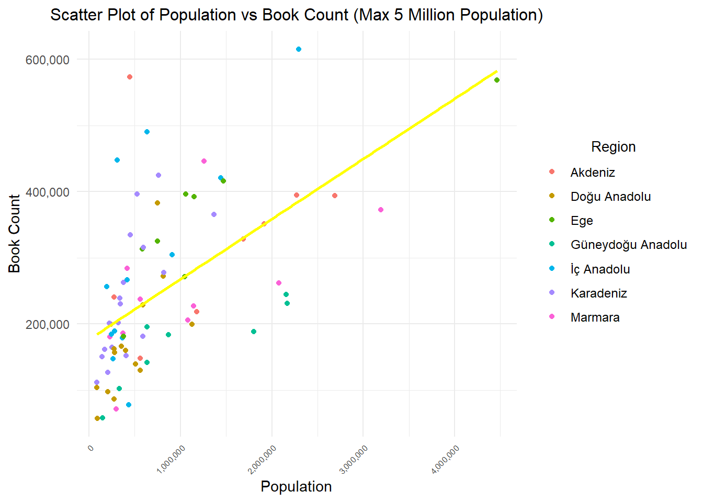
We supported the correlation results with visualizations. We can say that there is a tendency for the number of books in libraries to increase as the population in cities generally increases.
2.3) City Comparison
Show the code
data %>%filter(year ==2022) %>%mutate(book_per_person=book_num/population,city =factor(city, levels =unique(city[order(book_per_person, decreasing =TRUE)]))) %>%ggplot(aes(x = city, y = book_per_person *100)) +geom_point(color ="purple") +geom_smooth(method ="lm", se =FALSE, color ="yellow", formula = y ~ x) +labs(x ="Cities", y ="Book Number per Population (*100)") +ggtitle("Scatter Plot of Cities vs Book Number per Population in 2022") +theme_minimal() +theme(plot.title =element_text(size =12, hjust =0.5), axis.text.x =element_text(angle =90, hjust =1, size =6))
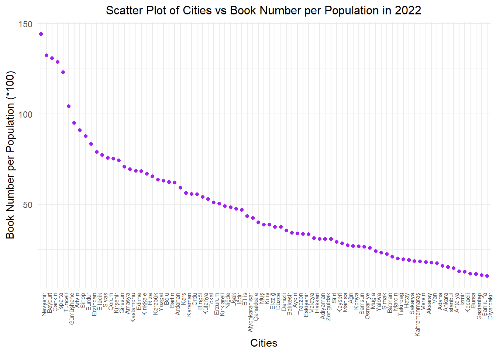
We looked into the number of books per capita in the population of each city, as we believed it would provide a more meaningful insight in this graph. The book count on the Y-axis was multiplied by 100. The graph is based on data from the year 2022. According to the results, surprisingly, Nevşehir and Bayburt appear to be leading cities in this aspect. Cities with high populations and diverse demographics, such as Istanbul, Ankara, Izmir, and Antalya, are at the bottom of the list. For now, let’s keep Bayburt in mind from this graph :)
Show the code
data %>%filter(year ==2022) %>%mutate(museum_per_person=((ministry_museum_num + private_museum_num)/population), city =factor(city, levels =unique(city[order(museum_per_person, decreasing =TRUE)]))) %>%ggplot(aes(x = city, y = museum_per_person *100000)) +geom_point(color ="purple") +geom_smooth(method ="lm", se =FALSE, color ="yellow", formula = y ~ x) +labs(x ="Cities", y ="Museum Number per Population (*100000) ") +ggtitle("Scatter Plot of Cities vs Museum Number per Population in 2022") +theme_minimal() +theme(plot.title =element_text(size =12, hjust =0.5), axis.text.x =element_text(angle =90, hjust =1, size =6))
In this graph, you can see the ratio of the combined number of ministry and private museums to the population of each city. The Y-axis has been multiplied by 100,000 for meaningful representation, showing the number of museums per 100,000 people.The graph is based on data from the year 2022. While Doğu and Güney Doğu cities are at the bottom of the list, once again, Bayburt leads the chart.
Show the code
data %>%filter(year ==2022) %>%mutate(book_num_per_lib=(book_num/public_lib), city =factor(city, levels =unique(city[order(book_num_per_lib, decreasing =TRUE)]))) %>%ggplot(aes(x = city, y = book_num_per_lib )) +geom_point(color ="purple") +geom_smooth(method ="lm", se =FALSE, color ="yellow", formula = y ~ x) +labs(x ="Cities", y ="Book Number per Library") +ggtitle("Scatter Plot of Cities vs Book Number per Library in 2022") +theme_minimal() +theme(plot.title =element_text(size =12, hjust =0.5), axis.text.x =element_text(angle =90, hjust=1,size=6))
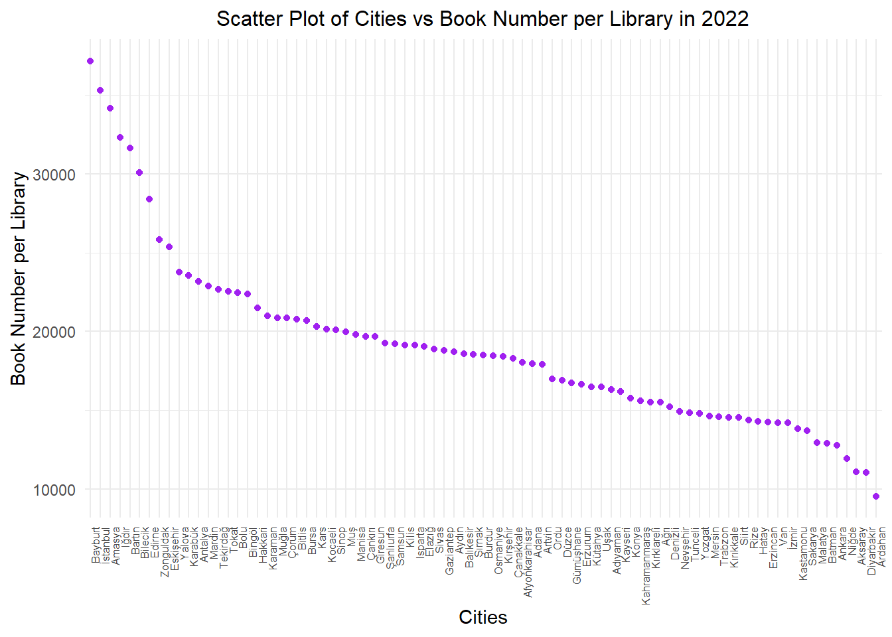
At this point, we aimed to examine the ratio of library sizes among cities by looking at the proportion of the number of books in a city to the number of libraries. The graph is based on data from the year 2022. The difference between Istanbul and Ankara is quite striking. There’s nearly a threefold difference in library sizes between Turkey’s two most populous cities. The leading city remains unchanged at the top position in this aspect as well.
Show the code
data %>%filter(year ==2022) %>%mutate(user_num_per_pop=(user_num/population), city =factor(city, levels =unique(city[order(user_num_per_pop, decreasing =TRUE)]))) %>%ggplot(aes(x = city, y = user_num_per_pop )) +geom_point(color ="purple") +geom_smooth(method ="lm", se =FALSE, color ="yellow", formula = y ~ x) +labs(x ="Cities", y ="User Number per Population") +ggtitle("Scatter Plot of Cities vs User Number per Population in 2022") +theme_minimal() +theme(plot.title =element_text(size =12, hjust =0.5), axis.text.x =element_text(angle =90, hjust=1,size=6))
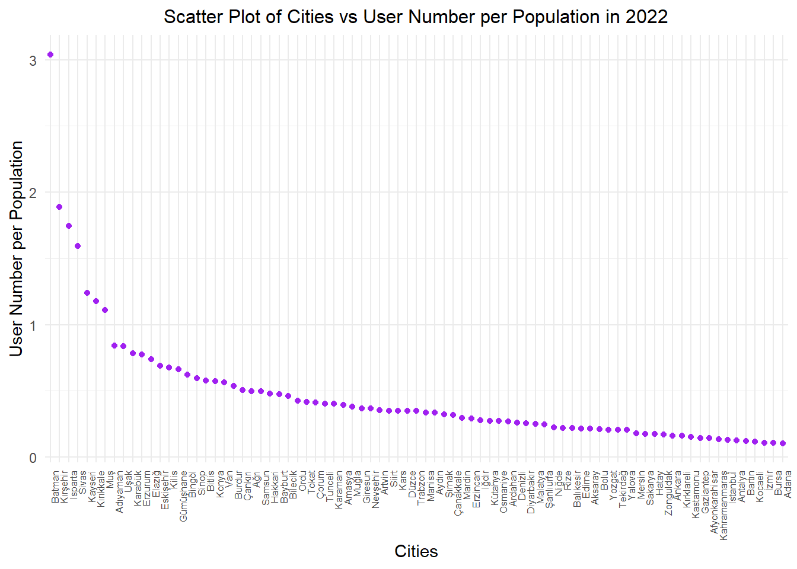
It’s time for Bayburt’s leadership to change now, as we’ve reached the statistics on library user counts :) The graph is based on data from the year 2022. What’s remarkable here is the higher user count-to-population ratio is occured in smaller cities. In the top position, Batman stands out, having a library usage statistic nearly three times its population. We’ve considered the possibility of potential inaccuracies in the records. Once again, our highly populated cities form the bottom of the list. Another noteworthy point is Ankara’s user count ratio being ahead of Istanbul.
2.4) Library User Number and Population Change Over Time
To observe the change in library user number in the cities with the highest population growth between 2015 and 2022, we start by identifying the six cities where the population has changed the most.
Show the code
population_2015 <- data %>%filter(year==2015) %>%select(city,population)population_2022 <- data %>%filter(year==2022) %>%select(city,population)population_change <- data %>%filter(year==2015) %>%select(city) %>%mutate(population_frac = (population_2022$population-population_2015$population)/population_2015$population) %>%arrange(desc(population_frac))kable(head(population_change),caption ="Top 6 Cities in Turkey with the Highest Population Change",col.names =c("City", "Population Fraction"),align =c("c", "c"))
Top 6 Cities in Turkey with the Highest Population Change
City
Population Fraction
Yalova
0.2717663
Tekirdağ
0.2180817
Antalya
0.1745928
Kocaeli
0.1679819
Muğla
0.1532749
Şanlıurfa
0.1467986
Show the code
p1 <- data %>%filter(city %in%c("Yalova","Tekirdağ","Antalya","Kocaeli")) %>%mutate(user_num_per_pop=(user_num/population)) %>%ggplot(aes(x = year, y = user_num_per_pop, color = city)) +geom_line() +labs(x ="Years", y ="User Number per Population") +ggtitle("Scatter Plot of Cities vs User Number per Population") +theme_minimal() +theme(plot.title =element_text(size =12, hjust =0.5)) +scale_x_continuous(breaks =seq(min(data$year), max(data$year), by =1)) +theme(plot.title =element_text(size =12, hjust =0.5), axis.text.x =element_text(angle =45, hjust=1,size=6))p2 <- data %>%filter(city %in%c("Yalova","Tekirdağ","Antalya","Kocaeli")) %>%ggplot(aes(x = year, y = population/10000000, color = city)) +geom_line() +labs(x ="Years", y ="Population/10M") +ggtitle("Scatter Plot of Cities vs Population") +theme_minimal() +theme(plot.title =element_text(size =12, hjust =0.5)) +scale_x_continuous(breaks =seq(min(data$year), max(data$year), by =1)) +theme(plot.title =element_text(size =12, hjust =0.5), axis.text.x =element_text(angle =45, hjust=1,size=6))grid.arrange(p1, p2, ncol =2)
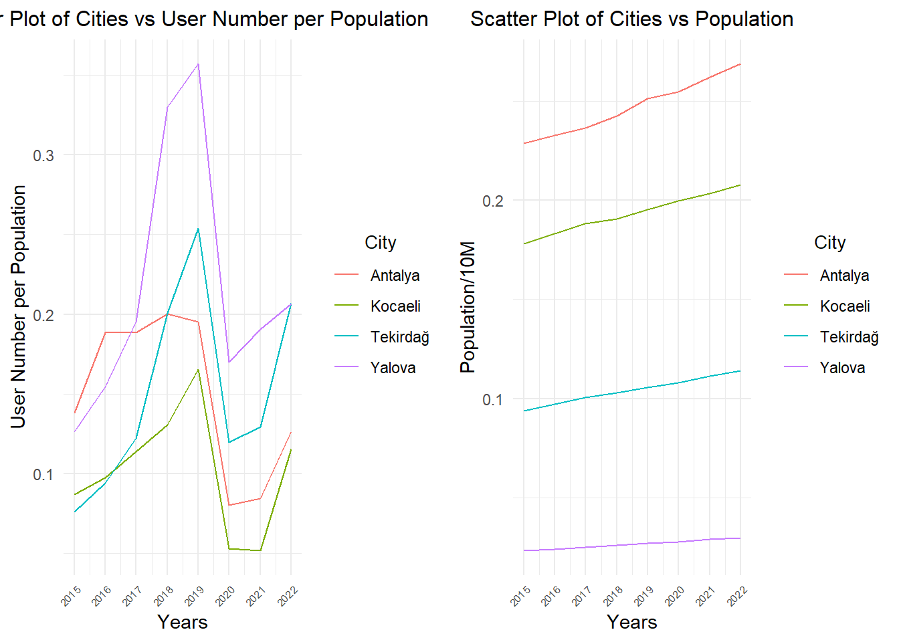
In the graph, we can observe that the city with the highest population growth, Yalova, experienced a significant increase in library user numbers between 2015 and 2019. However, in Antalya, despite substantial population growth, there is not a significant increase in library users. Between 2019 and 2021, there is a noticeable decline in library user numbers, influenced by the impact of the pandemic. As of 2022, these numbers seem to be on the rise again.
3) The number of historical remnants in cities in Turkiye
Show the code
top5_ruins <- data %>%filter(year ==2022) %>%arrange(desc(ruins_num)) %>%head(5) %>%select(city, ruins_num)kable(top5_ruins, format ="html", caption ="Top 5 Cities in Turkey with the Highest Number of Historical Remnants in 2022",col.names =c("City", "Historical Remnants"),align =c("c", "c"))
Top 5 Cities in Turkey with the Highest Number of Historical Remnants in 2022
City
Historical Remnants
Antalya
16
Muğla
16
Mersin
11
Nevşehir
11
İzmir
10
Show the code
data %>%filter(year ==2022& ruins_num >0) %>%mutate(city =factor(city, levels =unique(city[order(ruins_num, decreasing =FALSE)]))) %>%arrange(desc(ruins_num)) %>%ggplot(aes(x = city, y = ruins_num)) +geom_bar(stat ="identity", fill ="purple", color ="yellow") +labs(x ="City", y ="Number of Historical Remnants") +ggtitle("The number of historical remnants in cities in Turkiye (2022)") +theme_minimal() +theme(legend.position ="none",axis.text.x =element_text(angle =0, hjust =1, size =5),axis.text.y =element_text(size =8),plot.title =element_text(size =12, hjust =0.5)) +scale_x_discrete(breaks =unique(data$city)) +scale_y_continuous(breaks =seq(0, max(data$ruins_num), by =1))+coord_flip()
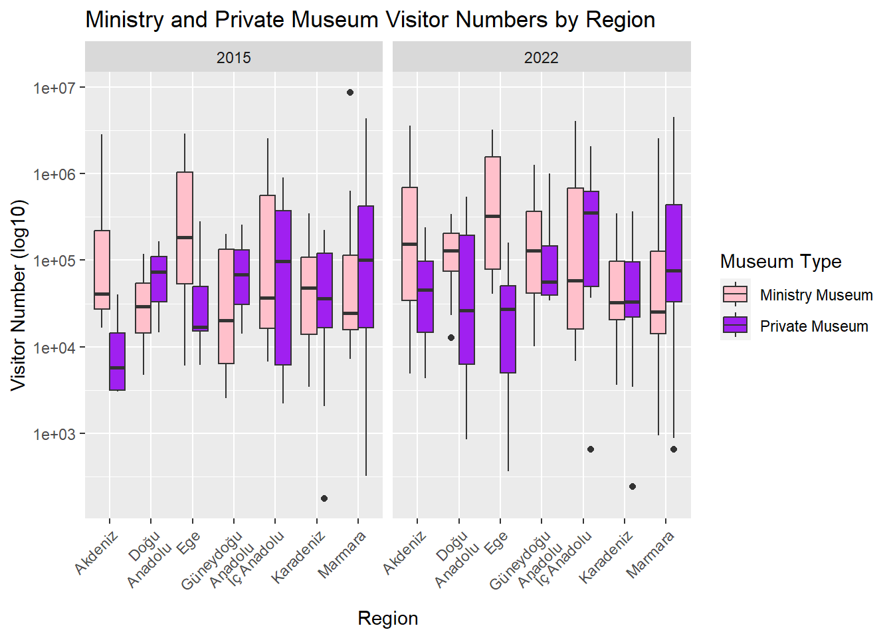
Show the code
top_cities_2020 <- data %>%filter(year ==2020) %>%arrange(desc(cinema_audiences_num)) %>%slice(1:10)ggplot(top_cities_2020, aes(x = population, y = cinema_audiences_num, label = city)) +geom_point() +geom_text_repel(size =3.5) +theme_minimal() +labs(title ="Cinema Audience Distribution by Population",x ="Populatıon",y ="cinema_audiences_num") +scale_x_continuous(labels = scales::comma) +scale_y_continuous(labels = scales::comma)
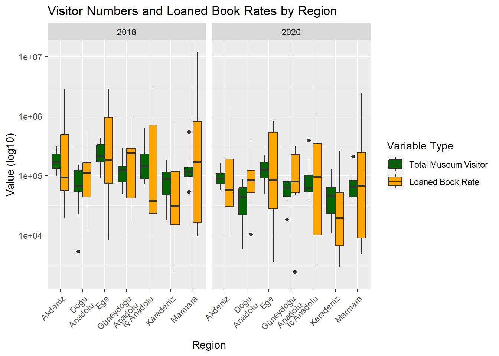
Show the code
<<<<<<< HEAD
data %>%filter(year ==2022) %>%mutate(museum_per_person=((ministry_museum_num + private_museum_num)/population), city =factor(city, levels =unique(city[order(museum_per_person, decreasing =TRUE)]))) %>%ggplot(aes(x = city, y = museum_per_person *100000)) +geom_point(color ="purple") +geom_smooth(method ="lm", se =FALSE, color ="yellow", formula = y ~ x) +labs(x ="Cities", y ="Museum Number Per Population (*100000)") +ggtitle("Scatter Plot of Cities vs Museum Number Per Population") +theme_minimal() +theme(plot.title =element_text(size =12, hjust =0.5), axis.text.x =element_text(angle =90, hjust =1, size =6))
<<<<<<< HEAD
Show the code
top_cities_2020 <- data %>%filter(year ==2020) %>%arrange(desc(cinema_audiences_num)) %>%slice(1:10)ggplot(top_cities_2020, aes(x = population, y = cinema_audiences_num, label = city)) +geom_point() +geom_text_repel(size =3.5) +theme_minimal() +labs(title ="Cinema Audience Distribution by Population in 2020",x ="Populatıon",y ="cinema audiences number") +scale_x_continuous(labels = scales::comma) +scale_y_continuous(labels = scales::comma)
Show the code
correlation <-cor(top_cities_2020$population, top_cities_2020$cinema_audiences_num, use ="complete.obs")print(paste("Correlation between population and cinema audiences number:", correlation))
[1] "Correlation between population and cinema audiences number: 0.998203615571087"
sadsadjaskdhkashdjaskda
Show the code
data_2020 <- data %>%filter(year ==2020)top_literacy_cities_2020 <- data_2020 %>%arrange(desc(literacy_rate)) %>%slice_head(n =10)ggplot(top_literacy_cities_2020, aes(x = loaned_book_num, y = suicides_num, color = city)) +geom_point() +geom_text_repel(aes(label = city)) +labs(x ="Loaned Book Number", y ="Number of Suicides",title ="The Effect of Literacy Rate on Suicide Rates") +theme_minimal() +theme(legend.position ="right")
Show the code
correlation <-cor(top_literacy_cities_2020$loaned_book_num, top_literacy_cities_2020$suicides_num, use ="complete.obs")print(paste("Correlation between loaned book number and number of suicides:", correlation))
[1] "Correlation between loaned book number and number of suicides: 0.971171019832996"
<<<<<<< HEAD
Show the code
data$population <-as.numeric(data$population)data$book_num <-as.numeric(data$book_num)data$public_lib <-as.numeric(data$public_lib)data$user_num <-as.numeric(data$user_num)data$user_num_per_thousand <-as.numeric(data$user_num_per_thousand)data$loaned_book_num <-as.numeric(data$loaned_book_num)data$ministry_museum_piece_num <-as.numeric(data$ministry_museum_piece_num)data$ministry_museum_num <-as.numeric(data$ministry_museum_num)data$ministry_museum_visitor_num <-as.numeric(data$ministry_museum_visitor_num)data$ruins_num <-as.numeric(data$ruins_num)data$private_museum_piece_num <-as.numeric(data$private_museum_piece_num)data$private_museum_personnel_num <-as.numeric(data$private_museum_personnel_num)data$private_museum_num <-as.numeric(data$private_museum_num)data$private_museum_visitor_num <-as.numeric(data$private_museum_visitor_num)data$cinema_audiences_num <-as.numeric(data$cinema_audiences_num)data$theater_audiences_num <-as.numeric(data$theater_audiences_num)data$literacy_rate <-as.numeric(data$literacy_rate)data$suicides_num <-as.numeric(data$suicides_num)cor_pop_book_2 <-cor(data$population, data$public_lib)cat("Correlation between Population and Number of Library:",cor_pop_book_2,"\n")
Correlation between Population and Number of Library: 0.615907
Show the code
cor_pop_book_3 <-cor(data$book_num, data$public_lib)cat("Correlation between Number of Book and Number of Library:",cor_pop_book_3,"\n")
Correlation between Number of Book and Number of Library: 0.8270526
Show the code
cor_pop_book_4 <-cor(data$user_num, data$public_lib)cat("Correlation between User Number and Number of Library:",cor_pop_book_4,"\n")
Correlation between User Number and Number of Library: 0.5895032
Show the code
cor_pop_book_5 <-cor(data$literacy_rate, data$public_lib)cat("Correlation between Literacy Rate and Number of Library:",cor_pop_book_5,"\n")
Correlation between Literacy Rate and Number of Library: 0.3595135
data_subset <- data %>%filter(year %in%c(2015, 2016, 2017, 2018, 2019, 2020, 2021))model <-lm(public_lib ~ population + book_num + user_num + literacy_rate, data = data_subset)summary(model)
Call:
lm(formula = public_lib ~ population + book_num + user_num +
literacy_rate, data = data_subset)
Residuals:
Min 1Q Median 3Q Max
-22.2930 -2.8056 -0.6017 2.1139 30.4192
Coefficients:
Estimate Std. Error t value Pr(>|t|)
(Intercept) -2.729e+01 1.052e+01 -2.595 0.00971 **
population -1.685e-06 2.048e-07 -8.230 1.31e-15 ***
book_num 4.149e-05 1.904e-06 21.797 < 2e-16 ***
user_num 6.093e-06 7.857e-07 7.755 4.16e-14 ***
literacy_rate 3.272e-01 1.105e-01 2.962 0.00319 **
---
Signif. codes: 0 '***' 0.001 '**' 0.01 '*' 0.05 '.' 0.1 ' ' 1
Residual standard error: 4.764 on 562 degrees of freedom
Multiple R-squared: 0.7392, Adjusted R-squared: 0.7373
F-statistic: 398.2 on 4 and 562 DF, p-value: < 2.2e-16
data_2020 <- data %>%filter(year ==2020)top_literacy_cities_2020 <- data_2020 %>%arrange(desc(literacy_rate)) %>%slice_head(n =10)ggplot(top_literacy_cities_2020, aes(x = loaned_book_num, y = suicides_num, color = city)) +geom_point() +geom_text_repel(aes(label = city)) +labs(x ="Loaned Book Number", y ="Number of Suicides",title ="The Effect of Literacy Rate on Suicide Rates") +theme_minimal() +theme(legend.position ="right")
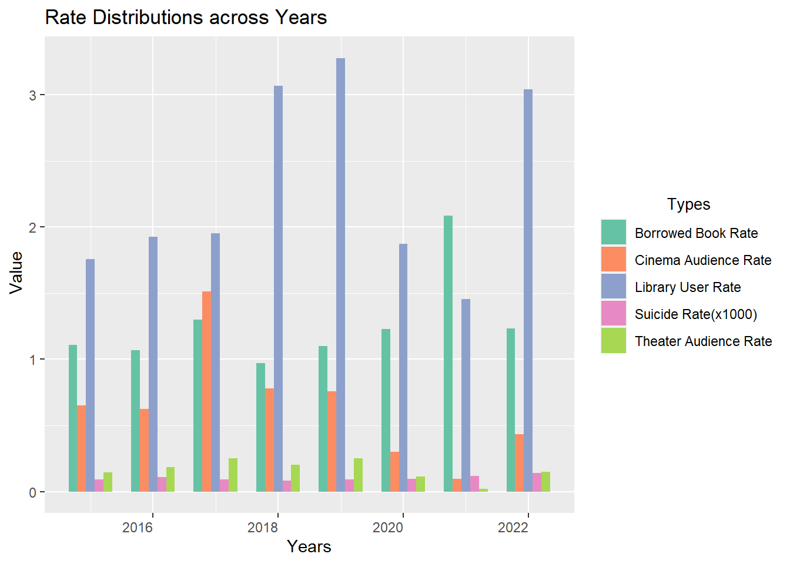
>>>>>>> aab7659df06b4b134e9c3a58f4a8733e14996ed8
4) Regional Analysis
4.1) Cinema-Theater Audience Numbers
Show the code
data %>%filter(year %in%c(2022,2015)) %>%pivot_longer(cols =c(cinema_audiences_num, theater_audiences_num), names_to ="Audience_Type", values_to ="Audience_Num") %>%ggplot(aes(x = region, y = Audience_Num, fill = Audience_Type)) +geom_boxplot(position ="dodge") +scale_y_log10() +labs(x ="Region", y ="Audience Number (log10)", fill ="Audience Type") +ggtitle("Cinema and Theater Audience Numbers by Region") +theme(axis.text.x =element_text(angle =45, hjust =1)) +scale_x_discrete(labels =function(x) str_wrap(x, width =10)) +scale_fill_manual(values =c("Red", "Blue"), labels =c("Cinema", "Theater"), name ="Audience Type") +facet_grid(.~year)
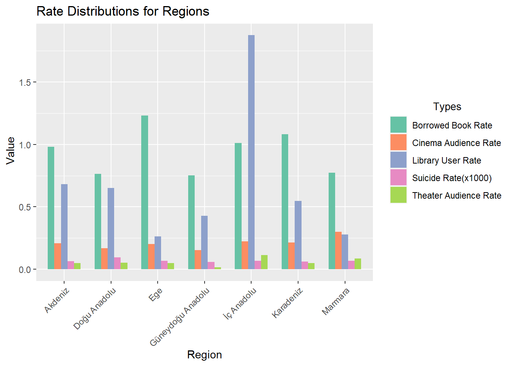
In the graph, we can see the distributions of the number of theater and cinema audiences in each region represented on a box plot. In all regions, cinema audiences are higher than theater audiences. Additionally, looking at the years 2015 and 2022, it is observed that there hasn’t been much change in these audience numbers.
4.2) Ministry and Private Museum Visitors
Show the code
data %>%filter(year %in%c(2022,2015)) %>%pivot_longer(cols =c(ministry_museum_visitor_num, private_museum_visitor_num), names_to ="Visitor_Type", values_to ="Visitor_Num") %>%ggplot(aes(x = region, y = Visitor_Num, fill = Visitor_Type)) +geom_boxplot(position ="dodge") +scale_y_log10() +labs(x ="Region", y ="Visitor Number (log10)", fill ="Museum Type") +ggtitle("Ministry and Private Museum Visitor Numbers by Region") +theme(axis.text.x =element_text(angle =45, hjust =1)) +scale_x_discrete(labels =function(x) str_wrap(x, width =10)) +facet_grid(.~year) +scale_fill_manual(values =c("Pink", "Purple"), labels =c("Ministry Museum", "Private Museum"), name ="Museum Type")
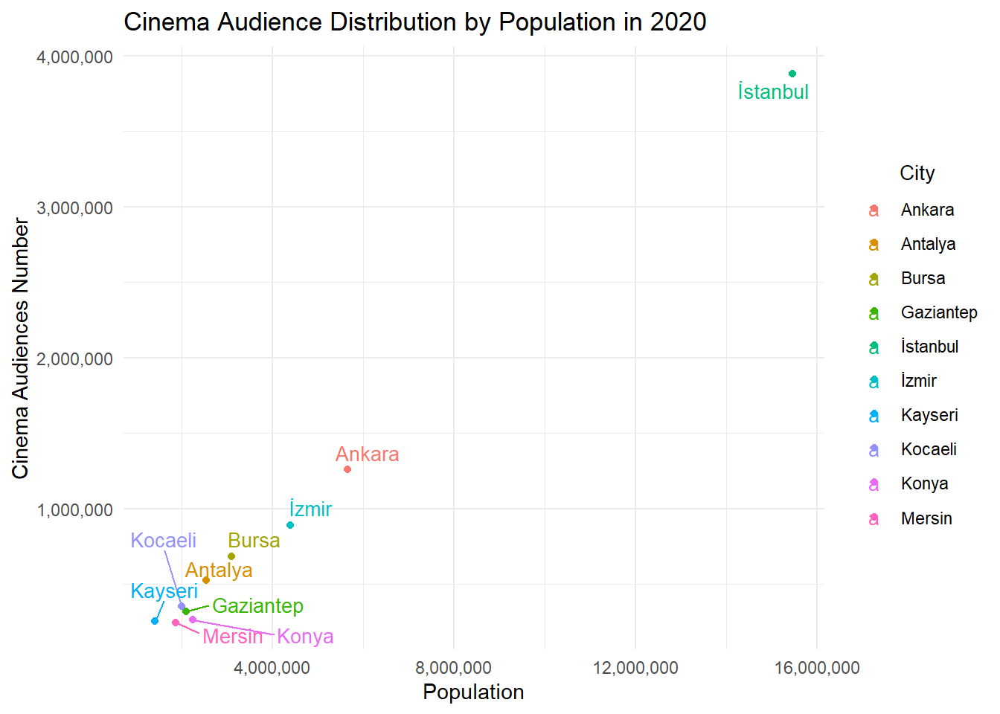
In the graph, the number of visitors of both ministry and private museums in each region is shown with box plot distributions. In the Akdeniz and Ege regions, the difference in visits to these two types of museums is more pronounced compared to other regions. Excluding the Karadeniz and Marmara regions, there has been an increase in visitor numbers to ministry museums in all regions over the years. Istanbul has the highest number of ministry museum visitors, while Düzce, excluding those with zero visitors, has the lowest number of private museum visitors.